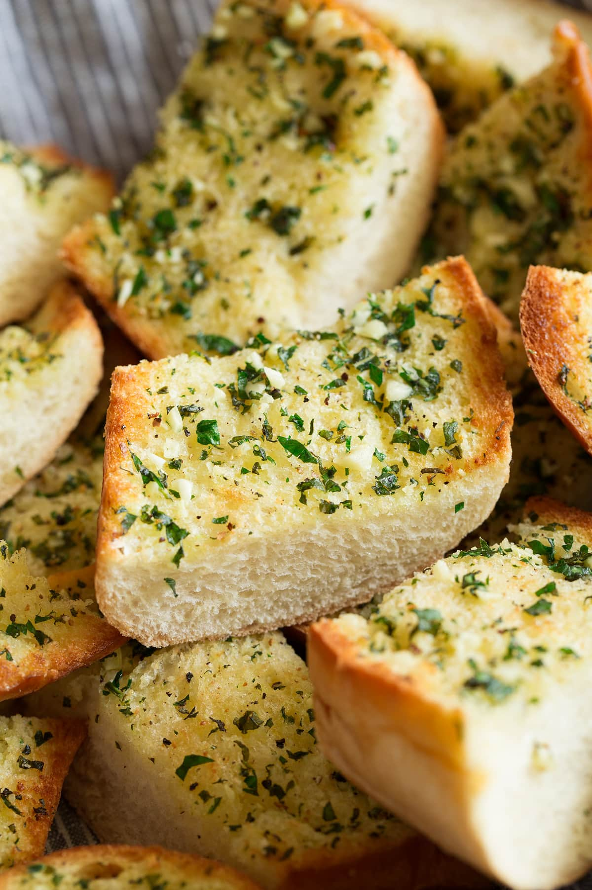

garlic bread recipe

ingredients
- 1 french baguette
- 1/2 stick salted butter
- 4 cloves minced garlic
- 1 tsp chopped parseley
directions
- slpit baguette hot dog style
- melt butter in microwave, add minced garlic
- using a brush, add garlic butter mixture to slpit baguette
- sprinkle chopped parseley to baguette
- preheat oven to BROIL
- broil open baguette until top is golden brown
Image Source
contact me
Email the recipes author here!
university of montana -
32 Campus Drive,
Missoula, MT 59801